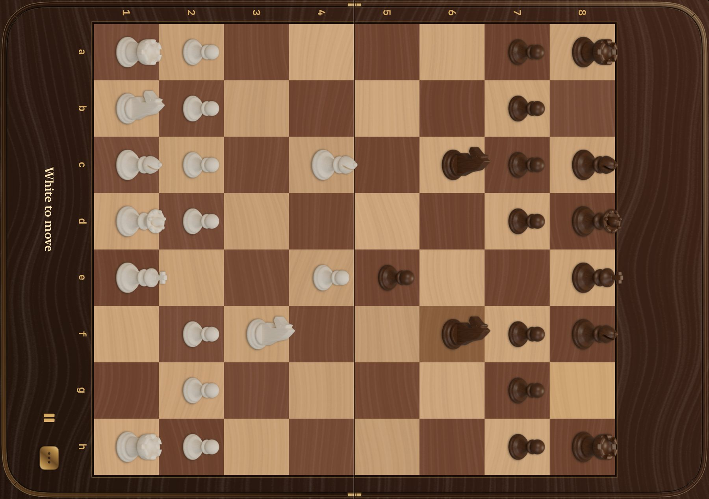
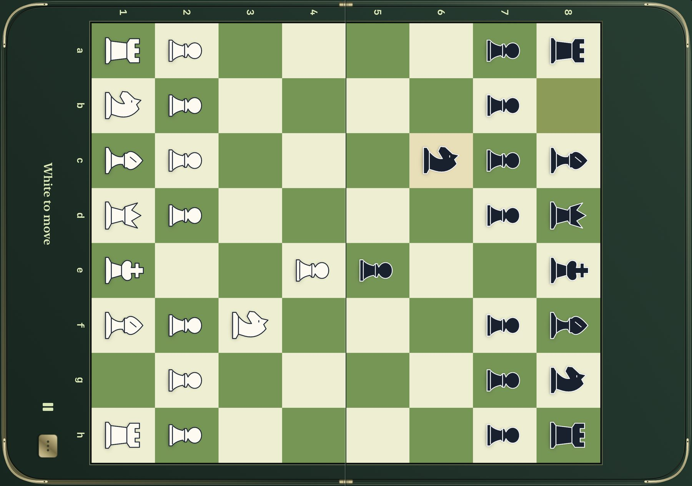
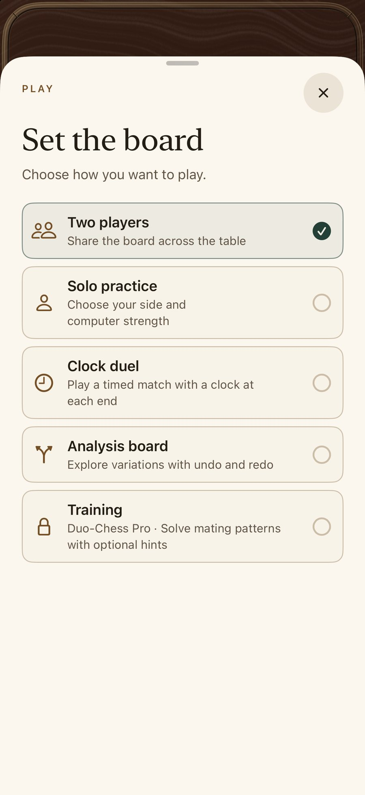
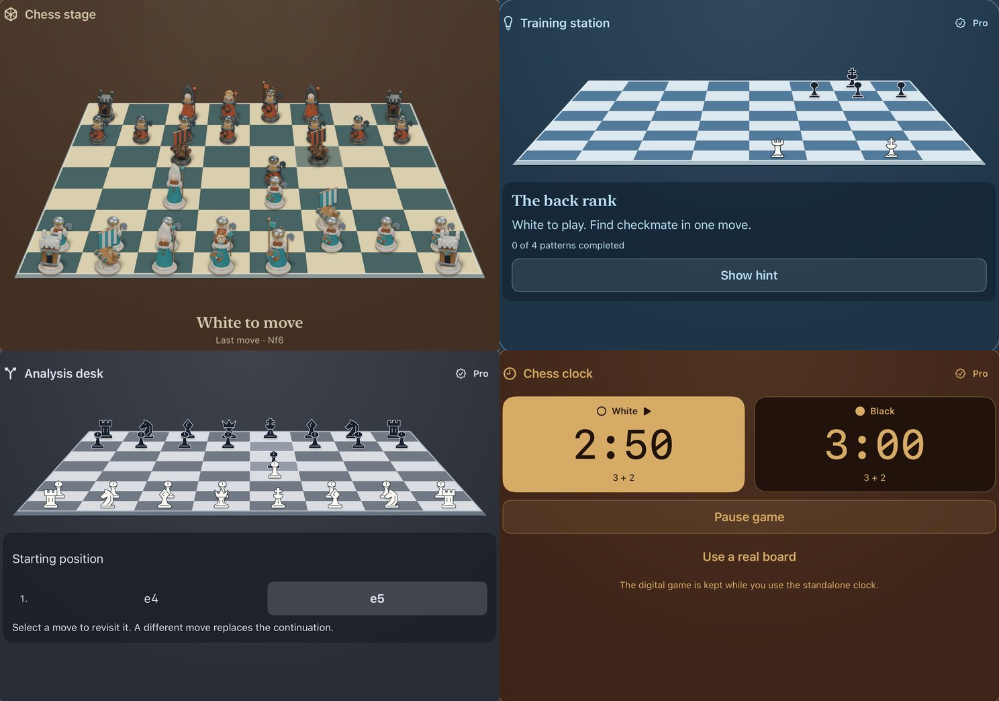
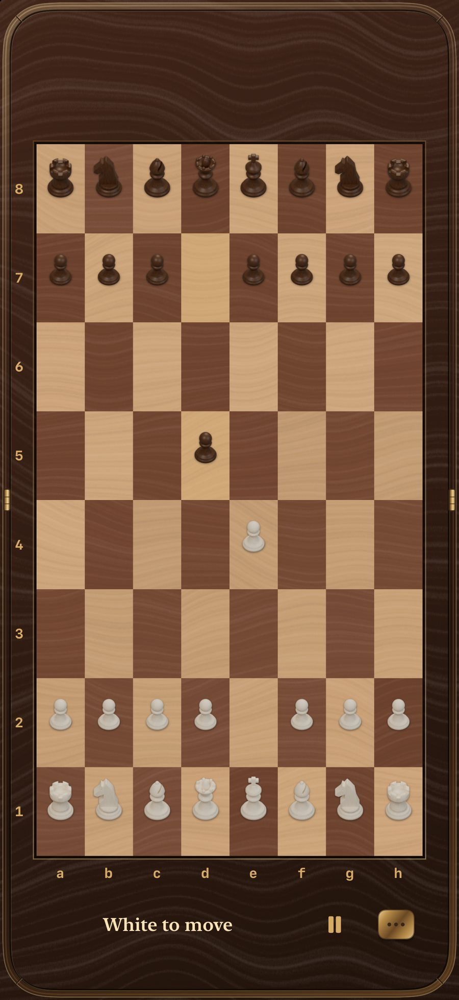
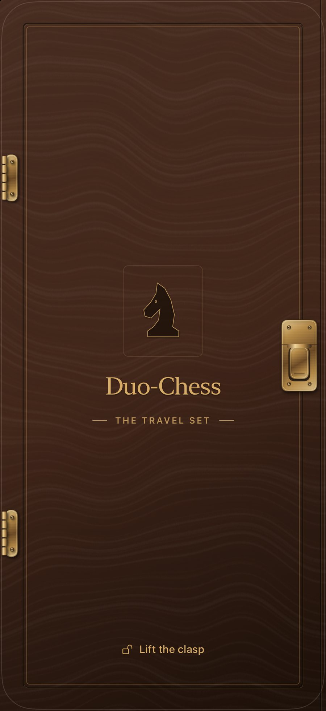

Duo-Chess macht aus dem iPhone Duo ein Reiseschach. Das iPhone ist die Kassette,
das Display ist das Brett: Messingverschluss anheben, aufklappen, und das Brett
erstreckt sich über beide Displayhälften — Weiß auf der einen Seite des Falzes,
Schwarz auf der anderen.
Ein Brett über den Falz 19 Ausführungen Kein Konto, kein Tracking

Classic Walnut auf dem iPhone Duo, aufgenommen im Simulator.
Die Kassette
Das iPhone ist die Kassette. Das Display ist das Brett.
Kein Startbildschirm, keine Menüs. Duo-Chess öffnet sich als geschlossene
Schachkassette in deiner gewählten Ausführung. Klapp das iPhone Duo auf, und du
schaust direkt aufs Brett.
Verschluss heben, dann aufklappen
Der Verschluss schwenkt mit einem leisen mechanischen Klicken um seinen Stift. Danach wartet die Kassette, bis du das iPhone öffnest — den Rest erledigt das echte Scharnier.
Der Falz liegt zwischen den Spielern
Die Reihen laufen entlang der langen Seite, ihr sitzt euch also gegenüber. Die beiden Bretthälften treffen sich genau am Falz, zwischen vierter und fünfter Reihe.
Mitten in der Partie zuklappen
Zuklappen verriegelt den Deckel wieder und blendet alle Bedienelemente aus. Stellung, Uhren und sogar eine offene Bauernumwandlung warten auf dich, wenn du wieder öffnest.

Der FalzWeißSchwarz
Tournament Green. Die gestrichelte Linie markiert das Scharnier des Duo.
In Aktion
Eine ganze Partie in dreißig Sekunden.
Schäfermatt auf Classic Walnut mit eingeschalteten fließenden Zügen: Legale Felder erscheinen als Punkte, der Springer springt, die Dame schlägt auf f7 — und der siegreiche König steigt aufs Podest.
Ein neues Spiel beginnt mit fünf Modus-Karten. Wähl eine aus, und es erscheinen nur
die Optionen, die dafür zählen — dann steht das Brett. Klassisches Schach zu zweit ist kostenlos und unbegrenzt.
Zu zweit
Ein Brett, zwei Seiten des Tisches. Stellungswiederholung und 50-Züge-Regel werden automatisch gewertet.
Allein üben
Wähl deine Farbe und wie weit der Computer vorausdenkt.
RelaxedConsideredSharp
Uhrenduell
An jedem Ende eine eingravierte Uhr, zum jeweiligen Spieler gedreht. Jeder Zug schaltet die Uhr um und schreibt das Inkrement gut.
3 + 25 Minuten10 + 5
Analysebrett
Varianten durchspielen mit Rückgängig und Wiederholen. Ein anderer Zug eröffnet eine neue Linie.
Training Pro
Vier Mattbilder mit optionalen Hinweisen. Ein Zug, der das Matt verfehlt, setzt die Stellung sanft zurück; gelöste Lektionen bleiben gespeichert. Der vollständige Trainer gehört zu Pro.
GrundreiheKönig und DameSpringernetzLäufernetz

Die App-Oberfläche ist auf Englisch.
Standard-Ausführungen
Jedes Brett bringt seine Kassette mit.
Jede Ausführung hat ihr eigenes Brett, eigene Figuren, Kassette und Verschluss. Ausgewählte
Basis-Ausführungen sind kostenlos; Crystal Ice, Obsidian Gold und Pure Glass
gehören zu Duo-Chess Pro. Wechseln geht jederzeit — die Partie bleibt, wo sie ist.
Probier sie hier auf dem Duo aus.
Wie ein Laptop aufstellen. Oben entsteht ein Pult.
Stell das Duo halb aufgeklappt auf den Tisch, und das Brett liegt flach auf der unteren
Hälfte. Die obere Hälfte wird zum Pult, das der Partie folgt — und verschwindet wieder,
sobald du ganz aufklappst.
Schachbühne
Die Stellung in 3D, wer am Zug ist, der letzte Zug, geschlagene Figuren und im Einzelspiel die Spielstärke des Computers. Für jede Partie kostenlos.
Trainingsstation Pro
Der vollständige Schachtrainer: Aufgabe, optionaler Hinweis, gespeicherter Fortschritt und eine Erklärung, sobald das Matt gefunden ist.
Analysepult Pro
Ein Partieformular der ganzen Linie. Tipp auf einen Zug, um dorthin zurückzuspringen.
Schachuhr Pro
Große digitale Partieuhren — und eine eigenständige Uhr für ein echtes Brett auf dem Tisch.

Tischansicht mit Viking Voyage und die vier Pulte, zur Durchsicht gerendert.
Sammlerkollektionen
Zehn eigene Welten.
Autos, Maschinen, Flugzeuge, Feiertage, Ritter und Wikinger: Jede Kollektion ist ein komplett
modellierter Satz mit eigener Kassette und eigenen Beschlägen. Einzeln kaufen, unabhängig von
Pro, oder im Bundle — und jeden Satz vorher in Ruhe ansehen.
Ultimate Vehicle Bundle
4 Kollektionen · 5,99 $
Pocket RacersSammlerautos 1:64 · 1,99 $
Heavy DutyBaumaschinen · 1,99 $
Sky SquadronSammlerflugzeuge · 1,99 $
Field CommandMilitärminiaturen · 1,99 $
Sechs Fahrzeugrollen pro Seite. Autos fahren auf ihr Feld, statt zu hüpfen, Maschinen bewegen sich mit Gewicht, Flugzeuge steigen und legen sich in die Kurve — und die Dame von Field Command ist ein Hubschrauber.
Halloween NightKürbisse, Fledermäuse, eine Geisterdame · 1,99 $
Midnight CelebrationSterne, ein Partypony, die Mitternachtsuhr · 1,99 $
Verspielte Spielzeugminiaturen mit eigenen Kronen, Höhen und Silhouetten, damit jeder Rang auch in Spielgröße lesbar bleibt. Jede Kassette bekommt ihre eigene Gravur und ein Emaille-Medaillon — spielbar das ganze Jahr.
Viking VoyageEsche & Petrol gegen Eiche & Rost · 1,99 $
Zwei verfeindete Ritterhäuser mit Schildwachen, Reitern und Burgtürmen — und zwei Wikingerclans mit Drachenbooten, Runenseherinnen und einem gekrönten Jarl, in einer Kassette aus Eichenplanken mit Eisenbändern.
Free, Pro & Kollektionen
Kostenlos spielen. Einmal mehr freischalten.
Kostenlos Schach zu zweit spielen. Mit Duo-Chess Pro einmalig zusätzliche Spielmodi, Themes und Schachtraining freischalten. Besondere Figurenwelten sind separat als Kollektionen und Bundles erhältlich. Kein Abo. Keine Werbung zum Launch.
Kostenlos
0 $
Unbegrenzt klassisches Schach zu zweit
Aufklappen und spielen — Kassette, Verschluss und das Brett über den Falz
Ausgewählte Basis-Ausführungen
Die Schachbühne, wenn das Duo halb aufgeklappt steht
Keine Werbung zum Launch
Duo-Chess Pro
9,99 $ einmalig
Crystal Ice, Obsidian Gold und Pure Glass
Erweiterte Modi für das halb aufgeklappte Duo: Trainingsstation, Analysepult, Schachuhr
Die eigenständige Uhr für ein echtes Brett
Der vollständige Schachtrainer
Kollektionen
1,99 $ je Kollektion
Zehn Sammlersätze, einzeln kaufbar und unabhängig von Pro
Ultimate Vehicle Bundle — vier Fahrzeugsätze für 5,99 $
Holiday Collection Bundle — vier Feiertagssätze für 5,99 $
Legends Collection Bundle — Ritter und Wikinger für 2,99 $
Zum Launch geplant Die kostenpflichtigen Angebote sind zum Launch geplant. Die Preise sind US-Launchpreise; in deinem Land können sie abweichen. Alle Käufe sind dauerhafte Einmalkäufe und lassen sich mit demselben Apple Account auf jedem Gerät wiederherstellen. Pro enthält die Kollektionen nicht.
Details
Figuren mit Gewicht.
Fließende Züge
Optional: Springer springen im Bogen, Läufer neigen sich, Bauern machen einen Schritt, Türme gleiten dicht übers Brett. Jede Ausführung stimmt ihre eigene Bewegung ab. Standardmäßig aus.
Holz auf Holz
Ein trockenes Aufsetzen, ein tieferer Schlag beim Schlagen, zwei kurze Klicks bei der Rochade — mit passender Haptik. Ton und Haptik lassen sich getrennt schalten und folgen dem Stummschalter.
Ein Podest für den Sieger
Am Ende erhebt sich der siegreiche König zwischen Dame und Turm — in den Figuren deiner Ausführung. Bei Remis verbeugen sich beide Könige. Die Schlussstellung bleibt einen Tipp entfernt.
Figurengröße
Figuren von 70 % bis 120 % skalieren, mit Live-Vorschau. Felder und Tippflächen behalten ihre Größe.
Game Center
Zwölf Erfolge, von der ersten Rochade bis zu allen vier Lektionen ohne Hinweis, und Bestenlisten für Siege gegen den Computer in jeder Stärke. Optional — als Gast spielst du genauso.
Für alle
VoiceOver benennt jedes Feld und sagt legale Züge an. Dynamische Schrift, „Bewegung reduzieren“, „Transparenz reduzieren“ und „Kontrast erhöhen“ werden berücksichtigt.
Auch auf iPhone und iPad
Ein Deckel statt eines Scharniers.
Ohne Falz bekommt die Kassette einen virtuellen Deckel. Heb den Verschluss an, und
er schwingt um seine Scharniere auf; über das Brettmenü schließt du ihn wieder.
Gleich hier ausprobieren
Tipp auf den Messingverschluss des iPhones neben diesem Text.
Gleiches Spiel, gleiche Ausführungen
Alle Modi, Ausführungen und Einstellungen laufen auf jedem iPhone und iPad mit iOS 18 oder neuer.
Weiter, wo du aufgehört hast
Deine Partie wird auf dem Gerät gespeichert und übersteht jedes Öffnen, Schließen und jeden Neustart.


Tipp auf den Verschluss
Datenschutz
Nur du, dein Gegenüber und das Brett.
Duo-Chess hat kein Konto, keine Analyse-Tools und keinen eigenen Server und startet ohne Werbung. Deine Partien und Einstellungen bleiben auf dem Gerät.
Auf dem Gerät gespeichert
Stellung, Uhren, Trainingsfortschritt und deine Einstellungen liegen lokal. Wer die App löscht, löscht auch sie.
Keine Berechtigungen
Keine Kamera, keine Kontakte, kein Standort. Duo-Chess fragt nach keinem Zugriff.
Nur Apple-Dienste
Käufe laufen über den App Store, Game Center ist optional. Ich erhalte keine Zahlungs- oder Kontodaten.
Gar kein Tracking
Keine Drittanbieter-SDKs, nichts wird für Werbung geteilt. Details in der Datenschutzerklärung.
Du bist bald am Zug.
Duo-Chess ist auf dem Weg in den App Store — gemacht für iPhone Duo, zu Hause auf jedem iPhone und iPad.
Bald imApp Store
Entwickelt für iPhone Duo iPhone & iPad · ab iOS 18 Oberfläche auf Englisch